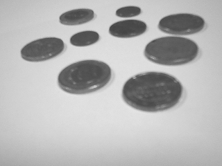

Week4: Introduction to OpenCV
Sumary
- During this week we have worked on the OpenCV image processing library that allows us to interact with images and perform transformations.
Assigments
- All the assigments related to the setup of Jetson-Nano should be sent to professor by email. As a Subject write "[IoT-DA Edge] Assignments Weeks4"
Basic Operations
Assigment 1: BasicOperations
Assign 1
- Inspect the pixel x=300, y=25 of ../images/input.jpg
- Which values have the RGB channels?
Assigment 2: BasicOperations
Assign 2
- Crop the image "input.jpg" to centered rectangle with half the width and half the height of the pyramid in the photo
Assigment 3: BasicOperations
Assign 3
- Develop a script which create a puzzle of an image (swapping four regions of a picture in clockwise), and one of the quarter only is shown the green channel as in the example
- Taking as input the Lena image avaliable in images directory

2. As an output the image (swapped) should be created

Image Processing
Assigment 4: BitWise Operations
Assign 4
- Detecting lane lines on a binary mask
- Create a masks to be applied e.g. ROI (trapezoid) to lane detection

Assigment 5: BitWise Operations
Assign 5
- Create a code that segmentated the ball of a video using
cv2.inRangefunction - A video can be found in the link

Assigment 6: Contours
Assign 6
- Create an application that count the number of coins through an image as in the following images
- Extra: can be extended using CSI camera in real-time and counting

Assigment 7: Hough Transform
Assign 7
- Detecting lane lines on a binary mask
- Create a masks to be applied e.g. ROI (trapezoid) to lane detection
- Detect lane from the road appling the Hough transform
Assigment 8: Hough Transform
Assign 8
- Using Hough transform, it is also possible to detect circles
- Use the OpenCV function
HoughCircles()to detect circles in an image. Take as input images the coins examples- More info related to
HoughCirclesfunction can be found in OpenCV documentation
- More info related to